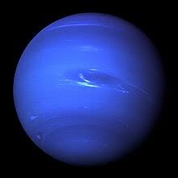

نبتون هو ثامن كوكب في المجموعة الشمسية ويتميز بلونه الأزرق العميق نتيجة لوجود غاز الميثان في غلافه الجوي. نبتون هو الكوكب الأبعد عن الشمس.
حقائق عن نبتون
- المسافة من الشمس: حوالي 4.5 مليار كيلومتر
- القطر: حوالي 49,244 كيلومتر
- المدة الزمنية لدورانه حول الشمس: حوالي 165 سنة أرضية
- درجة الحرارة: تصل إلى -214 درجة مئوية